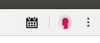

CalApp.co will insert a list of days and times you are available for meetings of at leastminutes between hours of (24 hour clock)
:and
:with at least
minutes before and after existing meetings.
When you click  in the top right of Chrome, CalApp.co will copy to your clipboard - ready for pasting into any email - your availability for meetings surrounded by the following customizable text.
Get started by setting your default availability and default email header and footer text below (you can also customise these later in each email) then click
Insert my availability on Saturdays and Sundays
When you click CalApp.co, your availability is determined by which days are visible, and by which of your (or your colleagues') calendars you currently have turned on in Google Calendar .
You can turn calendars on and off on the bottom right hand side of Google Calendar.